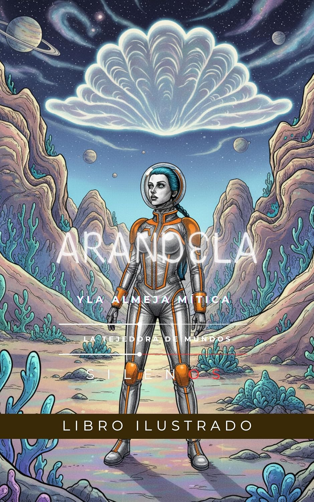

Arandela Colocada
ARANDELA: Y LA ALMEJA MÍTICA (SCI-FI nº 2)
Sinopsis
La audaz exploradora intergaláctica Arandela, a bordo de su BANANONAVE BLACJ, 'La Banana Plateada', se embarca en una crucial misión hacia Almeja Mítica, un bioluminiscente planeta al borde de la autodestrucción. Su núcleo de plasma blanco radioactivo amenaza con explotar, dejando el cosmos pringado de manchas blancas pegajosas que ralentizarían el universo entero. En las inestables proximidades del planeta, Arandela es rescatada de un remolino gravitacional por un enigmático Sireno de las profundidades, iniciando un inesperado vínculo amoroso. Juntos, descubren que la creciente inestabilidad del planeta está ligada a una guerra latente entre facciones de Sirenos por el control de la mística Perla Parlante, un artefacto ancestral de inmenso poder. Para calmar a Almeja Mítica y evitar la catástrofe cósmica, Arandela y su Sireno deben unir fuerzas con los Guardianes de la Perla y el sabio Orion, el Vidente Ancestral, para negociar un pacto entre las facciones en conflicto y ejecutar 'El Cantar de la Calma', un ritual ancestral. Su conexión cósmica y el poder de la Perla Parlante, junto a la audacia de Arandela y la empatía del Sireno, son la clave para estabilizar el planeta, forjando un legado de amor y cooperación que salva el cosmos.